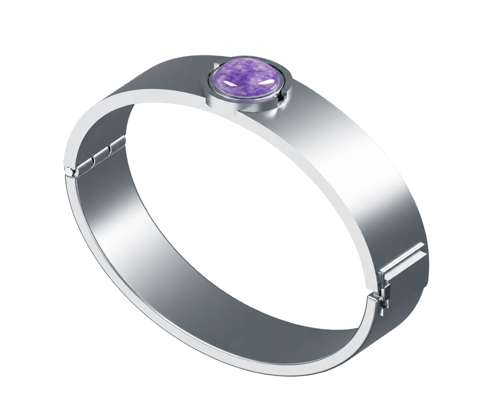
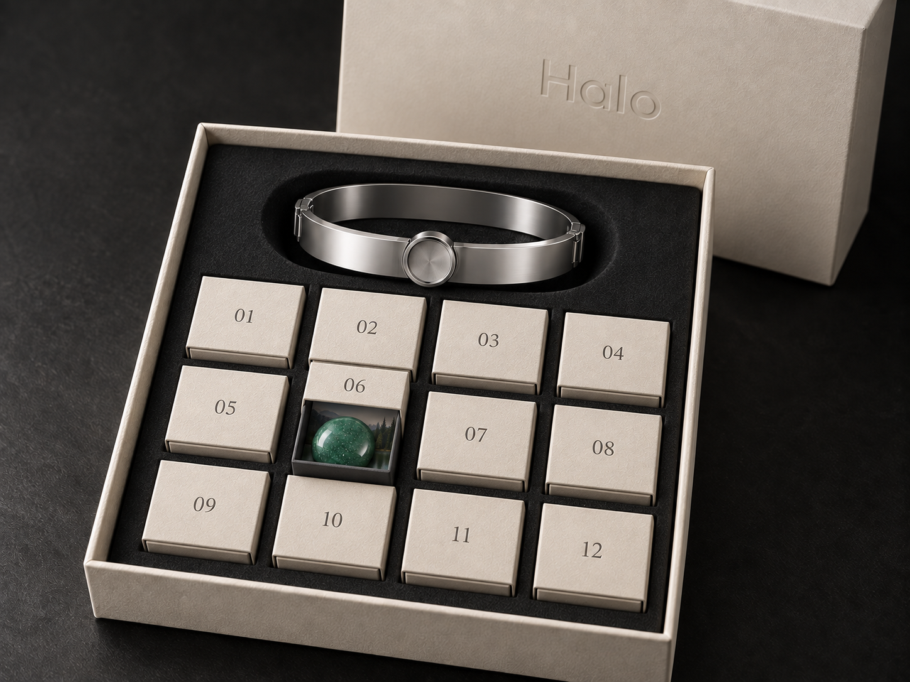

Halo · One continuous relationship
You meet
them once.
Then you
grow together.
Every day builds the month. Every monthly stone marks a visible evolution. Twelve genuine stones. One companion. A year of growing together.
See Luna grow
01 / The object
Real stone.
Considered steel.
Entirely yours.
Something substantial to carry with you. A reusable 316L stainless-steel bracelet, made to hold a genuine natural stone. Simple in form. Personal through time.
Color, grain and inclusions belong to the material. No two collections will be exactly alike.
Natural steel in Light.
Black PVD steel in Dark.
The same Halo, either way.
02 / One companion, through the year
Every month changes
both of you.
The same amber eyes. The same familiar presence. A changing silhouette, new markings and more ways to connect. Your companion’s name, personality and shared history stay with you.
Luna · Wolf · 2D evolution study. An illustration of the intended growth; expressive 3D is still in development.
A closer look
One month.
A noticeable change.
See what changes from one month to the next. The stone marks the chapter; Luna carries it forward.
Bond
06
Stone of twelve
Green aventurine
Half a year. So many ordinary, important days.
Deep green. Subtle mineral flecks.
Twelve evolutions. The same Luna. All twelve stones included.
03 / Life with Halo
A little, every day.
A change you can see.
Your daily check-ins and small commitments give the month its meaning. At each monthly milestone, change your stone and meet your companion again.
- 01
Show up today
Make a small commitment. Check in with Halo. Build the month, one day at a time.
- 02
Reach the milestone
Open the next numbered package. Change the stone in your bracelet.
- 03
Tap Halo
Bring Halo near your phone. Passive NFC is planned to recognize the stone.
- 04
Meet them again
Your companion evolves. A visible change, with everything you’ve shared still there.
- 05
Keep going
Another month. Another chapter. See who you both become.
The intended Halo experience. Stone recognition and expressive 3D evolution are in development.

04 / The connection
A new chapter.
The same relationship.
Your companion keeps their name, personality, memories and conversations. Each evolution adds new ways to respond to you. Earlier interactions stay. The relationship never starts over.
Your progress lives in Halo. The stone is the physical ritual, not the only place your growth is kept.
What is still being developed
Passive NFC is planned in the packaging beneath each stone. The jewelry contains no electronics. Hardware recognition, phone compatibility and expressive 3D evolution require prototype validation. This existing Progress screen is a demo capture; it does not demonstrate finished evolution or NFC. This saved design uses an earlier material palette. The current Halo I proposal uses one earned stone per completed month.
05 / Light & Dark
One Halo.
Your way to wear it.
Natural stainless steel or black PVD.
Two finish studies. One design language.
06 / The complete Halo year
Your year,
in one box.
One bracelet. Twelve genuine stones. Twelve numbered places in a presentation case. Your complete first year arrives together.

A year, waiting for you.
Open a small package each month. Lift the stone to reveal a printed detail beneath it. A quiet cue to the chapter you and your companion are beginning.
Time leaves something behind
More of the year revealed.
More of them to know.
The places in the case open up as your companion grows. Simple printed artwork holds the memory of each chapter.
An illustration of the reveal. Used stones can be kept and returned to their places; no electronics are needed in the case.
The complete collection
Twelve stones.
Each one different.
Cut and polished from natural mineral material. Inclusions, grain and color belong to the stone.
Packaging and material images are design studies. Final sourcing and manufacturing are still being validated. Natural variation is expected. Black onyx may use dyed natural chalcedony; any treatments will be disclosed.
07 / One complete Halo
One bracelet.
Twelve genuine stones.
One companion.
One year.
- 1 reusable 316L stainless-steel bracelet
- Light and Dark finish studies
- 12 genuine natural stones — the complete year
- 12 months of evolution with your original companion
- Planned packaging NFC recognition in the Halo app
- One year case with 12 individually numbered mini-packages
- Shipping details to be announced
Halo
In development
Pricing and availability will be announced.
Light finish · Complete twelve-stone collection · Design study
Join the waitlistOpens Halo’s existing waitlist. No payment is collected and no order is placed. Finish shown here is a preview.
Time, memory, continuity.
You change.
They change.
You grow together.
Explore the collection Hardware, packaging and companion evolution are in development.